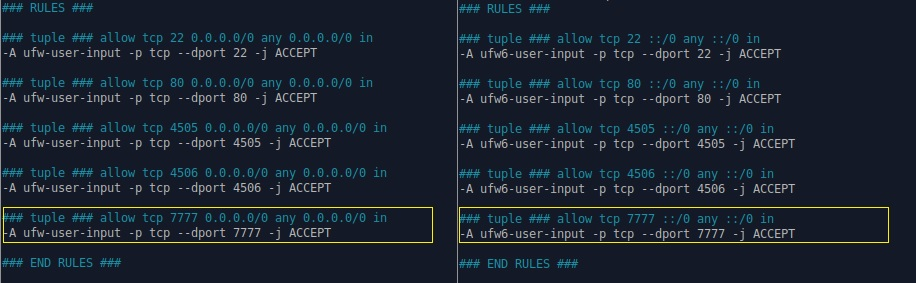
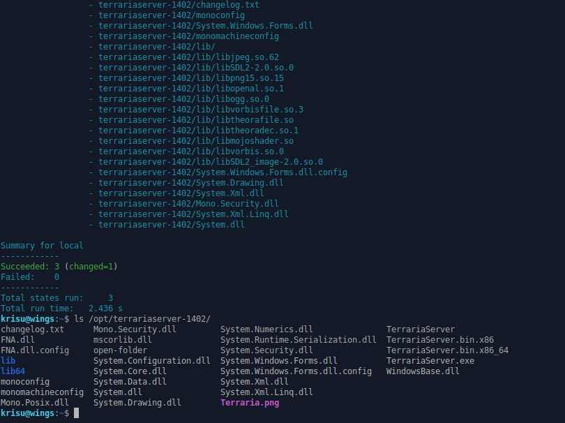
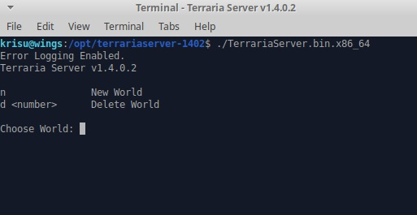
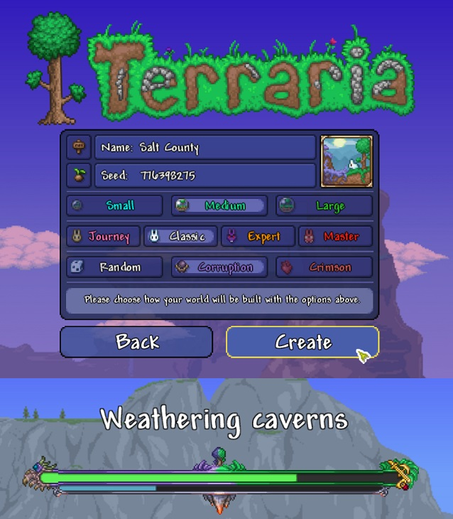
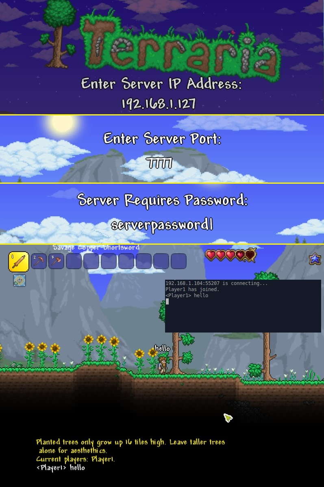
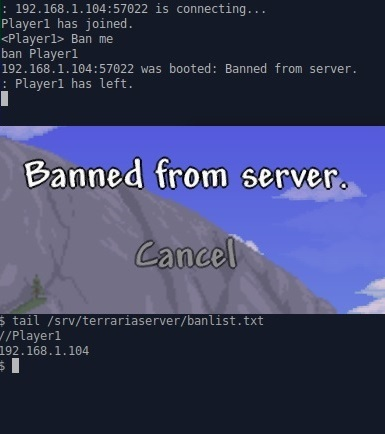

Oma moduli
20.05.2020, Kristian KoponenTehtävänanto
Palvelinten hallinta H7
Käytetyt laitteet
Windows 10
| Prosessori: | Intel(R) Core(TM) i5-2500K @ 3.30Ghz |
|---|---|
| Keskusmuisti: | 8GiB DDR3 |
| Näytönohjain: | Nvidia GTX 970 |
| Käyttöjärjestelmä: | Windows 10 64-bit |
VirtualBox 6.1
xubuntu 18.04.4 amd64 ISO
Oma moduli
Oma moduli (iso tehtävä). Ratkaise jokin oikean elämän tai keksitty tarve omilla tiloilla/moduleilla. Voit käyttää Salttia tai muuta valitsemaasi modernia keskitetyn hallinnan ohjelmaa. Esitä tulos viimeisellä opetuskerralla, 5-10 min (keskiviikon ryhmä). Live demo olisi kiva. Raportoi modulisi tarkoitus, koodi ja testit.
Esittely
Hiljattain Terraria-videopeliin tulleen laajan "Journey's End" pelipäivityksen myötä aikeeksi on tullut hyödyntää tulevaisuudessa omaa palvelinta Terraria-pelipalvelimen pyörittämiseen, joten tähän tehtävään aion luoda Salt-modulin joka asentaa pelipalvelimen ja konfiguroi sen käyttöä varten.
Olen jo aiemmin saanut Terraria-palvelimen pyörimään Linuxilla, joten teen tämän suoraan vaiheittain ensin manuaalisesti ja sitten lisään tilaan tarvittavat muutokset, jotta sama hoituu SaltStackilla. Luodaan ensin tilalle kansio ja init.sls tiedosto.
$ sudo mkdir /srv/salt/terrariaserver $ sudo mkdir /srv/salt/terrariaserver/files $ touch /srv/salt/terrariaserver/init.sls $ tree /srv/salt/terrariaserver terrariaserver/ ├── files └── init.sls 1 directory, 1 file
Jätetään tässä vaiheessa vielä init.sls tyhjäksi.
Terrarian virallisilta Wiki-sivuilta löytyy pätevä artikkeli palvelimen käyttöönottoon. Tämän lisäksi Linode-palvelintarjoaja on kirjoittanut oman ohjeensa kuinka se toimii kätevästi etäpalvelimella.
- Official Terraria Wiki - Server
- Official Terraria Wiki - Guide: Setting up a Terraria server
- Linode - How to Setup a Terraria Linux Server
Asennuksessa käytettyjä ohjelmia.
$ sudo apt-get update && sudo apt-get install wget unzip -yPalomuuri
Manuaalisesti
Terraria pelipalvelimen oletusportti on 7777, joten luodaan palomuuriin reikä tälle.
$ sudo ufw allow 7777/tcp
Rule added
Rule added (v6)Helppoa kuin heinän teko.
SaltStackilla
Nyt voidaan katsoa find-komenolla /etc/ hakemistosta mihin tiedostoihin ufw kirjoitti. Tulostetaan aika, tiedostopolku ja järjestetään ajan perusteella.
$ find /etc/ -printf '%T+ %p\n'|sort
...
2020-05-18+17:42:19.9370766300 /etc/ufw
2020-05-18+17:59:12.8152945000 /etc/ufw/user.rules
2020-05-18+17:59:12.8393065010 /etc/ufw/user6.rules
Kahteen tiedostoon on lisätty seuraavanlaiset rivit.
Vietän tässä vaiheessa tunnin selvittääkseni miten saisin lisättyä säännöt tiedostoihin niin, että orjakoneen omat UFW-säännöt säilyisivät ennallaan ja tila lisäisi ainoastaan säännön portille 7777.
- file.append -funktio lukee kohdetiedoston ja lisää määritellyn tekstin tiedoston perään mikäli se puuttuu. Sääntö tulee kyllä voimaan, mutta ufw komennot jälkeenpäin valittavat iptablesin käytöstä.
- file.blockreplace -funktio tekee muutoksia vain tietyn blokin sisään. UFW-säännöissä on kyllä valmis blokki "### RULES ###" ja "### END RULES ###" välillä, mutta en löytänyt tapaa jolla tämän sisälle voitaisiin appendaa, vaan nimensä mukaisesti se korvaa koko blokin sisällön.
Päädyin yksinkertaiseen tapaan korvata koko tiedosto file.managed -funktiolla.
Kopioidaan nämä tiedostot saltin kansioihin
$ sudo cp /etc/ufw/user.rules /srv/salt/terrariaserver/files/
$ sudo cp /etc/ufw/user6.rules /srv/salt/terrariaserver/files/Muokataan init.sls tiedostoa.
/srv/salt/terrariaserver/init.sls
### UFW rules
/etc/ufw/user.rules:
file.managed:
- source: salt://terrariaserver/files/user.rules
/etc/ufw/user6.rules:
file.managed:
- source: salt://terrariaserver/files/user6.rulesAjetaan tila paikallisesti.
$ sudo salt-call --local state.apply terrariaserver
...
Summary for local
------------
Succeeded: 2
Failed: 0
------------
Total states run: 2
Total run time: 31.466 ms
$ sudo ufw status
Status: active
To Action From
-- ------ ----
22/tcp ALLOW Anywhere
80/tcp ALLOW Anywhere
4505/tcp ALLOW Anywhere
4506/tcp ALLOW Anywhere
7777/tcp ALLOW Anywhere
22/tcp (v6) ALLOW Anywhere (v6)
80/tcp (v6) ALLOW Anywhere (v6)
4505/tcp (v6) ALLOW Anywhere (v6)
4506/tcp (v6) ALLOW Anywhere (v6)
7777/tcp (v6) ALLOW Anywhere (v6) Terraria pelipalvelimen lataus ja asennus
Manuaalisesti
Pelipalvelin tulee peliasennuksen mukana, mutta palvelimelleni en ole asentanut peliä, joten palvelin on ladattava ulkoisesta lähteestä. Siirrytään /opt/ hakemistoon ja haetaan wgetillä.
Lainaus: /opt/ hakemisto on tarkoitettu isoille erillisille ohjelmapaketeille, joita ei haluta lisätä /usr hakemistoon. (Esim. suljettuja ohjelmia). Linux.fi-wiki
$ cd /opt
$ sudo wget https://terraria.org/system/dedicated_servers/archives/000/000/036/original/terraria-server-1402.zip?1589675482Latauslinkistä saadaan zip-tiedosto, joten puretaan se.
$ sudo unzip terraria-server-1402.zip?1589675482
$ ls 1402/
Linux Mac WindowsZip-tiedostossa on kansio 1402/, jonka sisällä on kansiot Linux, Mac ja Windows käyttöjärjestelmien palvelintiedostoille. Emme tarvitse Mac tai Windows tiedostoja. Siirretään Linux-kansio omaan asennuskansioonsa ja poistetaan muut tiedostot.
$ sudo mv /opt/1402/Linux /opt/terrariaserver-1402
$ sudo rm -r /opt/1402/
$ sudo rm -r /opt/terraria-server-1402.zip*SaltStackilla
Lueskelen salt.states.archive -dokumentaatiota ja Zip-tiedoston voisi ladata suoraan lähteestä välimuistiin ja purkaa yhdellä tilalla, mutta en näe tapaa jolla yksilöidä 1402/Linux/ hakemisto. Palvelintiedostojen pienen koon vuoksi päätän luoda kansiosta oman zip-tiedoston Salt-modulin files/ kansioon. Näin voin jättää Windows ja Mac tiedostot lataamatta ja sisällyttää myös tulevat palvelimen konfiguraatiot samaan pakettiin. Paketoidaan terrariaserver-1402.
$ cd /opt/
$ sudo zip -r terrariaserverlinux1402.zip terrariaserver-1402/
Siirretään arkisto saltin kansioihin ja luodaan tila joka purkaa sen /opt/ hakemistoon.
$ sudo mv /opt/terrariaserverlinux1402.zip /srv/salt/terrariaserver/files//srv/salt/terrariaserver/init.sls
### UFW rules
...
### Extract Terraria-server Linux 1.4.0.2
extract_terrariaserver:
archive.extracted:
- name: /opt/
- source: salt://terrariaserver/files/terrariaserverlinux1402.zip
Ajetaan tila paikallisesti.
$ sudo salt-call --local state.apply terrariaserver/
...
----------
ID: extract_terrariaserver
Function: archive.extracted
Name: /opt/
Result: True
Comment: All files in archive are already present
Started: 15:04:42.045163
Duration: 1115.114 ms
Changes:
Summary for local
------------
Succeeded: 3
Failed: 0
------------
Total states run: 3
Total run time: 1.147 s
Tila näyttää toimivan. Poistetaan vielä palvelintiedostot ja kokeillaan uudelleen.
$ sudo rm -r /opt/terrariaserver-1402/
$ sudo salt-call --local state.apply terrariaserver/Testi toimii kuten odotettiin eikä kestäkään kuin muutaman sekunnin.
Käyttöoikeudet ja tekninen käyttäjä
Manuaalisesti
Tätyy varmistaa, että pelipalvelimen binääritiedosto on ajettavissa. Tarkastellaan palvelintiedostoja.
$ cd /opt/terrariaserver-1402/
$ ls -l TerrariaServer.bin*
-rw-r--r-- 1 root root 14310647 touko 19 15:11 TerrariaServer.bin.x86
-rw-r--r-- 1 root root 17497051 touko 19 15:11 TerrariaServer.bin.x86_64
Asetetaan ajo-oikeus binääreille.
$ sudo chown -R root:root /opt/terrariaserver-1402/
$ sudo chmod +x /opt/terrariaserver-1402/TerrariaServer.bin*
$ ls -l TerrariaServer.bin*
-rwxr-xr-x 1 root root 14310647 touko 19 15:11 TerrariaServer.bin.x86
-rwxr-xr-x 1 root root 17497051 touko 19 15:11 TerrariaServer.bin.x86_64Hyvä käytäntö on luoda tekninen käyttäjä, jolla palvelinta pyöritetään. Luodaan system user (-r), jonka kotihakemisto (-m) on hakemistossa /srv/terrariaserver (-d PATH).
$ sudo useradd -r -m -d /srv/terrariaserver terrariaserverSaltStackilla
Nopeasti testattuna luvat pysyvät ainakin paikallisesti arkiston sisällä kunnossa eli uudelleen zipattuna ei tarvitsisi erikseen vaihtaa oikeuksia, mutta voidaan kirjoittaa tila joka tarkastaa oikeudet kuitenkin. "0755" moodi tarkoittaa, että omistajalle (root) suodaan oikeudet lukea, kirjoittaa ja ajaa. Ryhmällä ja muilla on oikeudet vain lukea ja ajaa. Tila vaatii, että terraria-palvelimen arkisto on purettu kohdekansioon.
/srv/salt/terrariaserver/init.sls
### UFW rules
...
### Extract Terraria-server Linux 1.4.0.2
...
### Check TerrariaServer.bin executable permissions
/opt/terrariaserver-1402/TerrariaServer.bin.x86:
file.managed:
- source: /opt/terrariaserver-1402/TerrariaServer.bin.x86
- mode: '0755'
- require:
- extract_terrariaserver
/opt/terrariaserver-1402/TerrariaServer.bin.x86_64:
file.managed:
- source: /opt/terrariaserver-1402/TerrariaServer.bin.x86_64
- mode: '0755'
- require:
- extract_terrariaserver
Testataan tila.
$ sudo salt-call --local state.apply terrariaserver/
...
----------
ID: /opt/terrariaserver-1402/TerrariaServer.bin.x86
Function: file.managed
Result: True
Comment: File /opt/terrariaserver-1402/TerrariaServer.bin.x86 exists with proper permissions. No changes made.
Started: 16:44:49.677282
Duration: 2.173 ms
Changes:
----------
ID: /opt/terrariaserver-1402/TerrariaServer.bin.x86_64
Function: file.managed
Result: True
Comment: File /opt/terrariaserver-1402/TerrariaServer.bin.x86_64 exists with proper permissions. No changes made.
Started: 16:44:49.679686
Duration: 1.976 ms
Changes:
Summary for local
------------
Succeeded: 5
Failed: 0
------------
Total states run: 5
Total run time: 1.287 s
Seuraavaksi lisätään tila, joka luo teknisen käyttäjän. Katsotaan aiemmin luodun "terrariaserver" käyttäjän uid, jotta se on sama saltilla luodessa.
$ id -u terrariaserver
998Kirjoitetaan init.sl tila.
- name - käyttäjän tunnus
- system - luo järjestelmäkäyttäjän (sama kuin -r)
- createhome - oletuksen järjestelmä käyttäjälle ei luoda kotihakemistoa, tämä muuttaa asian. (sama kuin -m)
- home - kotihakemiston sijainti
- uid - käyttäjä ID
/srv/salt/terrariaserver/init.sls
### UFW rules
...
### Extract Terraria-server Linux 1.4.0.2
...
### Check TerrariaServer.bin executable permissions
...
### Create system user "terrariaserver"
terrariaserver-user:
user.present:
- name: terrariaserver
- system: True
- createhome: True
- home: /srv/terrariaserver
- uid: 998
Ajetaan tila paikallisesti ja kokeillaan.
$ sudo salt-call --local state.apply terrariaserver/
...
Summary for local
------------
Succeeded: 6
Failed: 0
------------
Total states run: 6
Total run time: 1.550 s
Käyttäjä näkyy olevan paikallaan. Poistetaan käyttäjä sekä kotihakemisto ja kokeillaan vielä uudelleen.
$ sudo userdel terrariaserver
$ sudo rm -r /srv/terrariaserver/
$ sudo salt-call --local state.apply terrariaserver/
...
----------
ID: terrariaserver-user
Function: user.present
Name: terrariaserver
Result: True
Comment: New user terrariaserver created
Started: 17:24:04.844913
Duration: 72.449 ms
Changes:
----------
fullname:
gid:
998
groups:
- terrariaserver
home:
/srv/terrariaserver
homephone:
name:
terrariaserver
passwd:
x
roomnumber:
shell:
/bin/sh
uid:
998
workphone:
Summary for local
------------
Succeeded: 6 (changed=1)
Failed: 0
------------
Total states run: 6
Total run time: 1.591 s
$ id terrariaserver
uid=998(terrariaserver) gid=998(terrariaserver) groups=998(terrariaserver)
$ ls -ld /srv/terrariaserver/
drwxr-xr-x 3 terrariaserver terrariaserver 4096 touko 19 17:24 /srv/terrariaserver/
Toimii.
Konfiguraatiotiedosto
Tällä hetkellä pelipalvelin on käytettävissä. Palvelin saadaan käynnistettyä TerrariaServer.bin.x86_64 binääristä.
Ylläolevasta kuvasta näkyy, että Terrarian palvelimella on velho, jonka avulla voidaan luoda uusi maailma, mutta palvelin voidaan myös konfiguroida käyttämään valmiiksi luotua karttaa.
Seuraavaksi tehdään kartta ja luodaan konfiguraatiotiedosto.
Manuaalisesti
Käydään aluksi luomassa kartta Terrariassa Windows 10-koneella, johon Terraria on asennettu.
Kartta löytyy polusta "C:\Users\%USERNAME%\Documents\my games\Terraria\Worlds\Salty_County.wld"
Siirretään kartta SCP:llä master-koneelle.
pscp "C:\Users\%USERNAME%\Documents\my games\Terraria\Worlds\Salt_County.wld" krisu@192.168.1.127:Downloads
Salt_County.wld | 6350 kB | 6350.8 kB/s | ETA: 00:00:00 | 100%Kopioidaan tiedosto terrariaserver-käyttäjän kotihakemistoon kansioon Worlds/
$ sudo mkdir /srv/terrariaserver/Worlds/
$ sudo mv ~/Downloads/Salt_County.wld /srv/terrariaserver/Worlds/
Nyt kun sudoteltiin uusi kansio ja tiedosto terrariaserver käyttäjän kotihakemistoon, muistetaan käydä muokkaamassa omistaja ettei jää rootiksi.
$ sudo chown -R terrariaserver:terrariaserver /srv/terrariaserver/Worlds/Käydään luomassa konfiguraatiotiedosto terrariaserver-1402 hakemistoon. Making a configuration file
/opt/terrariaserver-1402/serverconfig.txt
# Server
world=/srv/terrariaserver/Worlds/Salt_County.wld
banlist=/srv/terrariaserver/banlist.txt
motd=Planted trees only grow up 16 tiles high. Leave taller trees alone for aesthethics.
port=7777
password=serverpassword
maxplayers=16
# Automatic world if .wld is not found
autocreate=1
worldname=DefaultWorld
worldpath=/srv/terrariaserver/Worlds
difficulty=0Jotta voidaan lukea karttatiedosto terrariaserver kotihakemistosta, on käytettävä sudoa tai lisättävä käyttäjä ryhmään ja muokattava kansion oikeuksia. Käytetään nyt sudoa ja testataan että palvelin toimii.
$ cd /opt/terrariaserver-1402/
$ sudo ./TerrariaServer.bin.x86_64 -config /opt/terrariaserver-1402/serverconfig.txt
Error Logging Enabled.
...
Settling liquids 47%
Settling liquids 48%
Settling liquids 49%
Settling liquids 50%
Terraria Server v1.4.0.2
Listening on port 7777
Type 'help' for a list of commands.
: Server started
help
Available commands:
help Displays a list of commands.
playing Shows the list of players.
clear Clear the console window.
exit Shutdown the server and save.
exit-nosave Shutdown the server without saving.
save Save the game world.
kick <player> Kicks a player from the server.
ban <player> Bans a player from the server.
password Show password.
password <pass> Change password.
version Print version number.
time Display game time.
port Print the listening port.
maxplayers Print the max number of players.
say <words> Send a message.
motd Print MOTD.
motd <words> Change MOTD.
dawn Change time to dawn.
noon Change time to noon.
dusk Change time to dusk.
midnight Change time to midnight.
settle Settle all water.
: Nyt palvelin ei pyydä luomaan maailmaa, vaan tuntuu siltä että maailma ladattiin konfiguraatiosta. Yhdistetään palvelimelle Terrariassa.
Päästiin palvelimelle.
SaltStackilla
Konfiguraatiotiedosto voidaan sisällyttää aiemmin luotuun arkistoon tai lisätä jälkikäteen file.managed -funktiolla. Tehdään kumpikin tapa ja varmistutaan siitä että tiedosto on paikallaan.
Paketoidaan palvelinkansio uudelleen ja siirretään arkisto Salt-modulin files kansioon.
$ cd /opt/
$ sudo zip -r terrariaserverlinux1402.zip terrariaserver-1402/
$ sudo mv terrariaserverlinux1402.zip /srv/salt/terrariaserver/files/Kopioidaan serverconfig.txt ja Salt_County.wld tiedostot Salt-modulin files kansioon.
$ sudo cp /opt/terrariaserver-1402/serverconfig.txt /srv/salt/terrariaserver/files/
$ sudo cp /srv/terrariaserver/Worlds/Salt_County.wld /srv/salt/terrariaserver/files/Luodaan tilat konfiguraation ja World-tiedoston kopioimiseksi niille osoitettuihin hakemistoihin.
terrariaserver-hakemistoon on luotava Worlds kansio .wld -tiedostoille. Tämä hoituu asettamalla "makedirs: True" -parametri tilaan. makedirs -parametri luo yläkansion mikäli niitä ei ole. Oikeudet ja omistajuuskin on tiedoston mukaiset.
.wld-tiedosto pitää sisällään maailman tallennustilanteen, joten sen tilaan on laitettava "replace: False", jotta tallennus ei aina palaudu alkuvaiheeseen. replace -parametri kirjoittaa ainoastaan tiedoston mikäli sitä ei löydy, mutta pakottaa oikeudet ja omistajan aina.
Annetaan ryhmälle luku ja kirjoitusoikeudet ('0664'), jotta terrariaserver ryhmään kuuluva käyttäjä voi tallentaa maailman.
/srv/salt/terrariaserver/init.sls
### UFW rules
...
### Extract Terraria-server Linux 1.4.0.2
...
### Check TerrariaServer.bin executable permissions
...
### Create system user "terrariaserver"
...
### Create serverconfig.txt and world file
/opt/terrariaserver-1402/serverconfig.txt:
file.managed:
- source: salt://terrariaserver/files/serverconfig.txt
- mode: '0644'
- require:
- extract_terrariaserver
/srv/terrariaserver/Worlds/Salt_County.wld:
file.managed:
- source: salt://terrariaserver/files/Salt_County.wld
- user: terrariaserver
- group: terrariaserver
- mode: '0664'
- replace: False
- makedirs: True
- require:
- terrariaserver-user
Ajetaan tila paikallisesti.
$ sudo salt-call --local state.apply terrariaserver/
...
Summary for local
------------
Succeeded: 8
Failed: 0
------------
Total states run: 8
Total run time: 1.843 s
Toimii. Poistetaan terrariaserver-1402 kansio /opt/-hakemistosta ja Worlds kansio terrariaserver kotihakemistosta ja ajetaan tila uudelleen.
$ sudo rm -r /opt/terrariaserver-1402/
$ sudo rm -r /srv/terrariaserver/Worlds/
$ sudo salt-call --local state.apply terrariaserver/
...
----------
ID: /opt/terrariaserver-1402/serverconfig.txt
Function: file.managed
Result: True
Comment: File /opt/terrariaserver-1402/serverconfig.txt is in the correct state
Started: 22:12:51.195751
Duration: 4.251 ms
Changes:
----------
ID: /srv/terrariaserver/Worlds/Salt_County.wld
Function: file.managed
Result: True
Comment: File /srv/terrariaserver/Worlds/Salt_County.wld updated
Started: 22:12:51.200654
Duration: 132.652 ms
Changes:
----------
diff:
New file
group:
terrariaserver
mode:
0664
user:
terrariaserver
Summary for local
------------
Succeeded: 8 (changed=2)
Failed: 0
------------
Total states run: 8
Total run time: 2.832 s
serverconfig.txt tuli onnistuneesti arkistosta ja file.managed tarkisti että se on paikallaan. Worlds-kansio luotiin ja sinne luotiin Salt_County.wld.
Lisätään käyttäjä ryhmään "terrariaserver". Käynnistetään palvelin, tehdään maailmaan muutos, tallennetaan ja katsotaan korvaako SaltStack .wld-tiedoston.
$ sudo adduser $(whoami) terrariaserver
$ cd /opt/terrariaserver-1402
$ ./TerrariaServer.bin.x86_64 -config /opt/terrariaserver-1402/serverconfig.txt
Error Logging Enabled.
...
Terraria Server v1.4.0.2
Listening on port 7777
Type 'help' for a list of commands.
: Server startedLuotiin puinen bunkkeri aloitusalueelle. Tallennetaan maailma, poistutaan ja ajetaan tila.
: save
: exit
$ sudo salt-call --local state.apply terrariaserver/
...
----------
ID: /srv/terrariaserver/Worlds/Salt_County.wld
Function: file.managed
Result: True
Comment: File /srv/terrariaserver/Worlds/Salt_County.wld exists with proper permissions. No changes made.
Started: 22:51:20.636925
Duration: 1.899 ms
Changes:
Summary for local
------------
Succeeded: 8
Failed: 0
------------
Total states run: 8
Total run time: 1.566 s
Ei ole tehty muutoksia tallennukseen. Maailma siis säilyy sellaisena kuin se on viimeksi tallennettu vaikka tila ajettaisiin uudelleen.
Palvelimen pyöritys ja hallinta (tmux / systemd / terrariad)
Tällä hetkellä pelipalvelin vaatii manuaalisen käynnistyksen ja pyörii interaktiivisessa terminaalissa. Tämä ratkaisu ei sovi etäiselle palvelimelle. Pelipalvelin on saatava pyörimään taustalla terminaali multiplekserissä ja automatisoitava käynnistys mahdollisten kaatumisien varalta systemd skriptillä.
Manuaalisesti
Asennetaan tmux
$ sudo apt-get update && sudo apt-get install tmuxKokeillaan käynnistää palvelin tmuxissa. Linoden ohjeissa on käytetty tmuxin sijaan screen -ohjelmaa. Komento, jolla ohjelma saadaan pyörimään screenissä on
$ screen -d -m -S terrariaserver /bin/bash -c "/opt/terrariaserver-1402/TerrariaServer.bin.x86_64 -config /opt/terraria-1402/serverconfig.txt"Käännetään sama komento tmuxille sopivaksi. man screen ja man tmux auttavat.
- new-session - luo uuden session
- -d - käynnistää kyseisen session irrotettuna (detached)
- -s - on nimi sessiolle
- shell-komento - määrittelee binäärin jota kutsutaan ja antaa sille parametriksi -config, joka määrittelee konfiguraatiotiedoston sijainnin.
$ tmux new-session -d -s terrariaserver '/opt/terrariaserver-1402/TerrariaServer.bin.x86_64 -config /opt/terrariaserver-1402/serverconfig.txt'Luodaan uusi tiedosto systemd kansioon nimeltä "terraria.service".
- Description - kuvaus systemd-palvelulle
- Type - prosessin käynnistystyyppi. (simple, exec, forking, oneshot, dbus, notify, idle)
- User - määrittelee käyttäjän prosessille
- KillMode - "none" varmistaa, että palvelin ehtii tallentaa ennen sammumista.
- ExecStart - Määrittelee shell-komennon, joka ajetaan prosessin käynnistämiseksi.
- ExecStop - Määrittelee shell-komennon, joka ajetaan prosessin lopettamiseksi.
- WantedBy - Vähän auki, mutta "multi-user.target" käynnistää prosessin automaattisesti.
/etc/systemd/system/terraria.service
[Unit]
Description=daemon for terraria server 1.4.0.2
[Service]
Type=simple
User=terrariaserver
KillMode=none
ExecStart=/usr/bin/tmux new-session -d -s terrariaserver '/opt/terrariaserver-1402/TerrariaServer.bin.x86_64 -config /opt/terrariaserver-1402/serverconfig.txt'
ExecStop=/usr/local/bin/terrariad exit
[Install]
WantedBy=multi-user.target
terraria.service on otettava käyttöön.
$ sudo systemctl enable terraria.service"ExecStop" kohdassa määritellään terrariad skripti, jota ei vielä ole luotu.
Luodaan terrariad -skripti Linoden mallin mukaan, mutta muokataan tämä tmux-yhteensopivaksi
Komentojen selvittäminen onnistuu screen ja tmux manuaaleja selaamalla. Alla oleva if -lauseke ilmeisesti tutkii screen-session kansion käyttäjä-ID:tä ja vertaa sitä. En muista enää mistä, mutta stackoverflow'ta selaillessa vastaan tuli tietoa, että tämä käyttää pistoketta. Jotta voin selvittää mikä tmuxin vastaava kansio on, katsotaan mitä pistokkeita tmux käyttää. Sitä myötä selviää myös kansio, jonka user ID:tä voidaan verrata.
$ tmux new-session -d -s terrariaserver '/opt/terrariaserver-1402/TerrariaServer.bin.x86_64 -config /opt/terrariaserver-1402/serverconfig.txt'
$ sudo lsof -U|grep '^tmux'
tmux:\x20 28641 krisu 6u unix 0xffff982735953400 0t0 514432 /tmp/tmux-1000/default type=STREAM
Kansio on "/tmp/tmux-1000/default". Perässä oleva numero on oletettavasti uid, koska se on sama kuin käyttäjän krisu id. Korvataan se alla olevassa koodissa tähdellä. Testataan komentoa terminaalissa.
$ sudo su - terrariaserver -c "stat -c '%u' /tmp/tmux-*/default"
998Saadaan käyttäjän "terrariaserver" uid, joten olettaisin toimivan.
/usr/local/bin/terrariad
#!/usr/bin/env bash
send="`printf \"$*\r\"`"
attach='script /dev/null -qc "tmux attach -t terrariaserver"'
inject="tmux send-keys -t terrariaserver $send ENTER"
if [ "$1" = "attach" ] ; then cmd="$attach" ; else cmd="$inject" ; fi
if [ "`stat -c '%u' /tmp/tmux-*/default`" = "$UID" ]
then
$cmd
else
su - terrariaserver -c "$cmd"
fi
Skripti auttaa esimerkiksi liittämään tmux-sessioon.
$ sudo terrariad attachTai ajamaan palvelimen komentoja tmux-session ulkopuolelta
$ sudo terrariad saveSaltStackilla
Monimutkaisin vaihe on ohi. Luotiin vain kaksi tiedostoa, jotka on saatava nyt SaltStackin kautta luotua.
Tässä hyödynnetään tmux-pakettia. Vaikka mielestäni tmux oli jo valmiiksi asennettu xubuntulle, voidaan luoda pkg.installed tila.
systemd service on myös laitettava päälle.
Kopioidaan tiedostot Salt-modulin kansioon ja kirjoitetaan tilat
$ sudo cp /usr/local/bin/terrariad /srv/salt/terrariaserver/files/
$ sudo cp /etc/systemd/system/terraria.service /srv/salt/terrariaserver/files/
/srv/salt/terrariaserver/init.sls
### UFW rules
...
### Extract Terraria-server Linux 1.4.0.2
...
### Check TerrariaServer.bin executable permissions
...
### Create system user "terrariaserver"
...
### Create serverconfig.txt and world file
...
### tmux package install
tmux:
pkg.installed
### "terraria.service" systemd script and "terrariad" shell script
/etc/systemd/system/terraria.service:
file.managed:
- source: salt://terrariaserver/files/terraria.service
- mode: '0644'
- require:
- tmux
/usr/local/bin/terrariad:
file.managed:
- source: salt://terrariaserver/files/terrariad
- mode: '0755'
- require:
- tmux
### terraria.service enabled and running
terraria-service-enabled:
service.enabled:
- name: terraria.service
- require:
- /etc/systemd/system/terraria.service
- /usr/local/bin/terrariad
terraria-service-running:
service.running:
- name: terraria.service
- require:
- /etc/systemd/system/terraria.service
- /usr/local/bin/terrariad
Ajetaan tila paikallisesti.
$ sudo salt-call --local state.apply terrariaserver
...
Summary for local
-------------
Succeeded: 13
Failed: 0
-------------
Total states run: 13
Total run time: 3.478 s
Tähän mennessä näyttää hyvältä. Nyt voidaan testata tilaa alusta puhtaalle minionille.
Lopputestaus puhtaalla minionilla.
Ajetaan moduli minionille.
$ sudo salt 'feather1' state.apply terrariaserver
feather1:
----------
ID: /etc/ufw/user.rules
Function: file.managed
Result: False
Comment: Source file salt://terrariaserver/files/user.rules not found
Started: 02:55:18.891377
Duration: 27.255 ms
Changes:
----------
ID: /etc/ufw/user6.rules
Function: file.managed
Result: False
Comment: Source file salt://terrariaserver/files/user6.rules not found
Started: 02:55:18.918813
Duration: 7.382 ms
Changes:
...
Summary for feather1
-------------
Succeeded: 11 (changed=8)
Failed: 2
-------------
Total states run: 13
Total run time: 24.356 s
Kaikki muut tilat näyttävät menevän läpi, paitsi ufw säännöt. Väittää että puuttuu lähteestä, mutta kyllä ne siellä ovat. Ongelma taitaakin olla oikeuksissa.
$ ls -l /srv/salt/terrariaserver/files/user*.rules
-rw-r----- 1 root root 1765 touko 19 02:42 /srv/salt/terrariaserver/files/user6.rules
-rw-r----- 1 root root 1786 touko 19 02:42 /srv/salt/terrariaserver/files/user.rulesTiedostoista näyttää puuttuvan lukuoikeus muilta käyttäjiltä.
$ sudo chmod o=r /srv/salt/terrariaserver/files/user*.rules
Kokeillaan uudelleen
$ sudo salt 'feather1' state.apply terrariaserver
...
Summary for feather1
-------------
Succeeded: 13 (changed=2)
Failed: 0
-------------
Total states run: 13
Total run time: 4.046 s
Nyt kaikki tilat on mennyt läpi.
Testaillaan palvelinta.
$ sudo systemctl status terraria$ sudo terrariad help
$ sudo terrariad attach$ hostname -I
192.168.1.128 
Johtopäätös
Kaikesta päätellen palvelin on oikein asennettu ja Salt-moduli toimii.
Lähteet
http://terokarvinen.com/2020/configuration-managment-systems-palvelinten-hallinta-ict4tn022-spring-2020/
https://terraria.gamepedia.com/Server
https://terraria.gamepedia.com/Guide:Setting_up_a_Terraria_server
https://www.linode.com/docs/game-servers/host-a-terraria-server-on-your-linode/
https://docs.saltstack.com/en/latest/ref/states/all/salt.states.file.html
https://www.linux.fi/wiki/Hakemistorakenne
https://docs.saltstack.com/en/latest/ref/states/all/salt.states.archive.html
https://linux.die.net/man/1/screen
https://linux.die.net/man/1/tmux